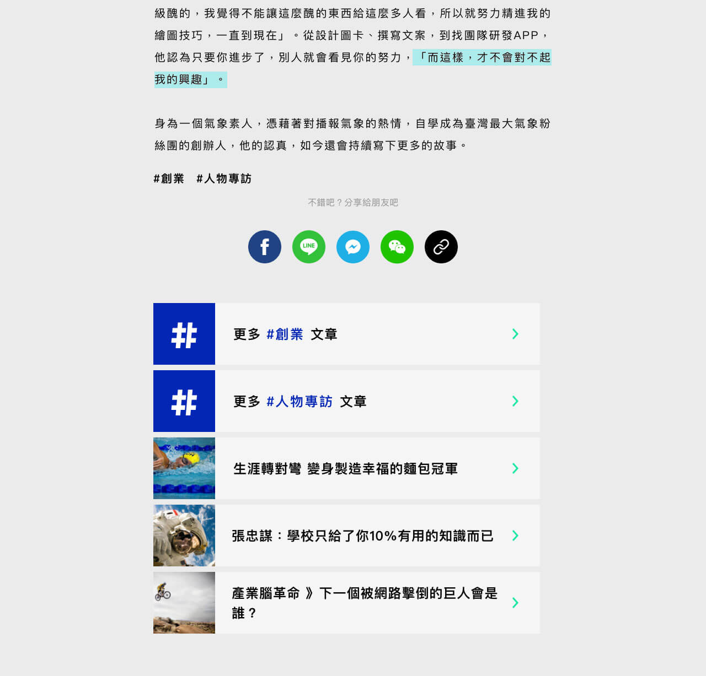
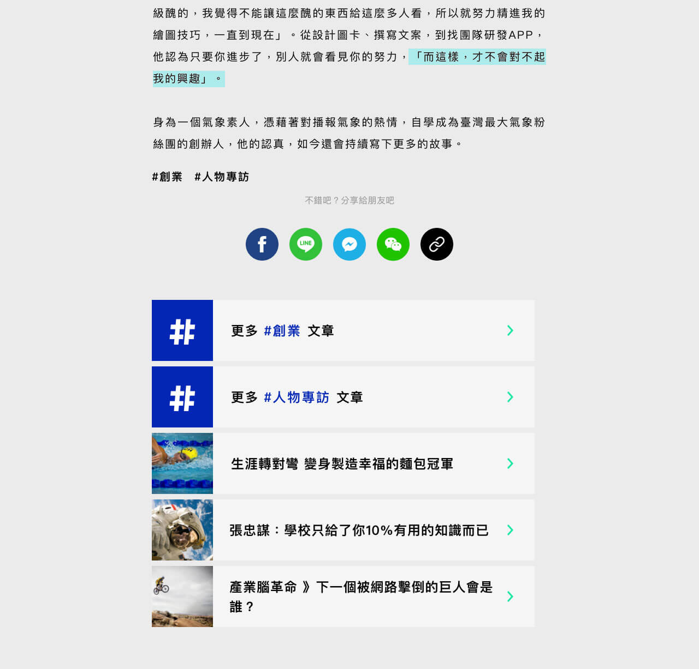
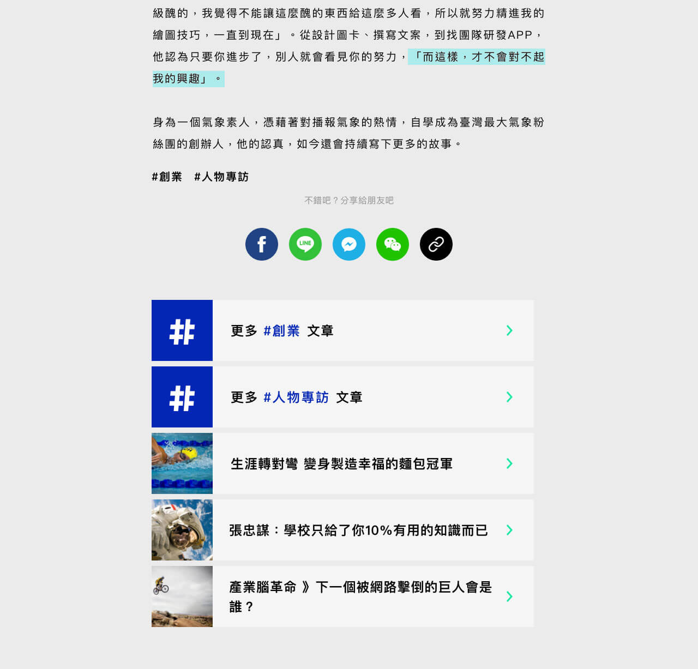

此新聞網站遇到主要問題是，工作階段少、停留時間短，多數用戶抵達特定新聞便離開。為了拯救停留時間與跳離，首先是優化閱讀體驗、迷你新聞卡片式瀏覽、增加單屛可見的文章數、無底載入。工作階段增加的部分則優化推薦文章，擴散上則是金句節錄、社群分享，在回訪率上則是追蹤特定專欄作家、訂閱每週整理。
此次合作經驗，和老闆、專欄作家公關、記者都有接觸到，了解雙邊平台的痛點，也直接與後端工程師討論，包含推薦文章如何進行、後台設定、捲動載入的效能與 SEO 等問題，並獨立完成設計與切版。Beta 版網站請見此處
